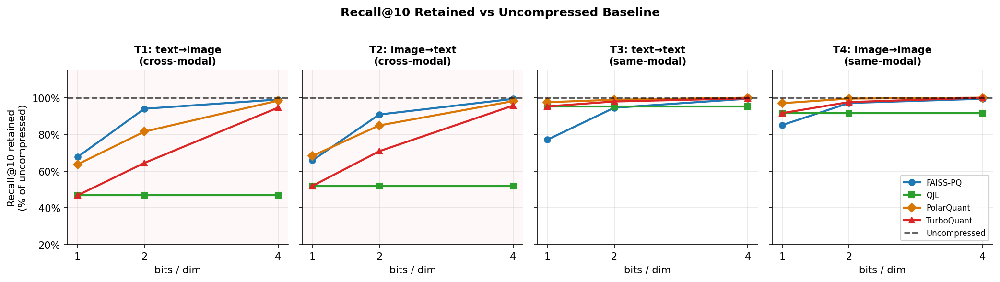
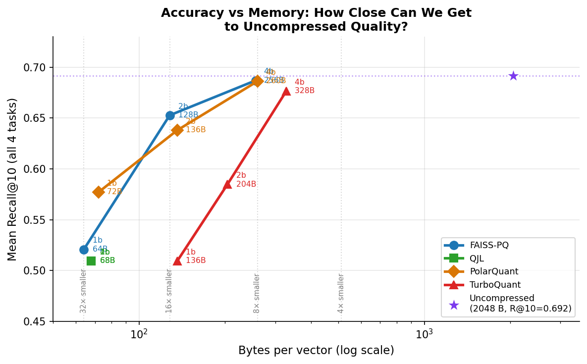
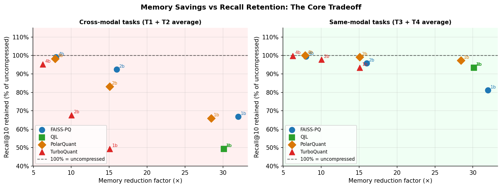
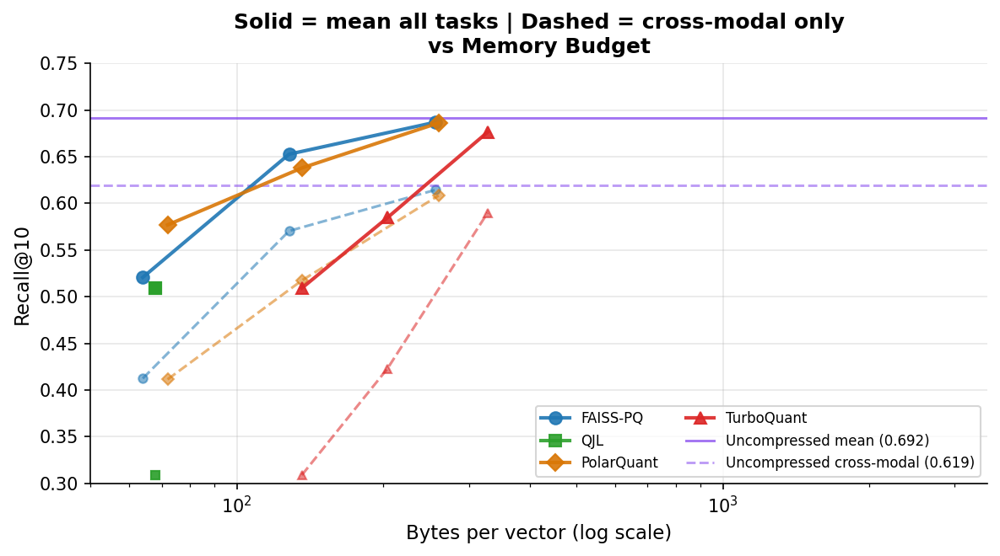
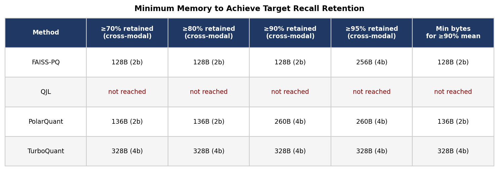
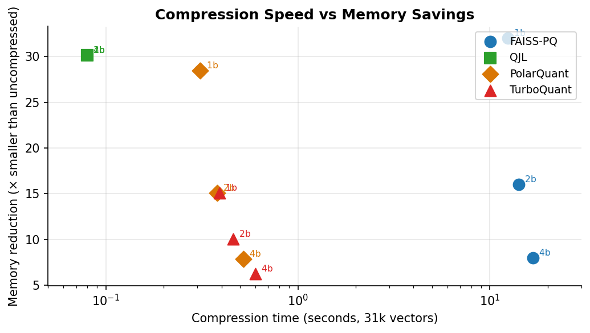

Final Project Report • University of Wisconsin–Madison
CLIP-style multimodal retrieval systems store large databases of image and text embeddings, making vector compression a practical necessity. Recent analytic quantizers — QJL, PolarQuant, and TurboQuant — were developed primarily for Transformer KV-cache compression and high-dimensional vector quantization, but their behavior on multimodal embeddings is less understood. We evaluate QJL, PolarQuant, TurboQuant, and FAISS product quantization on 512-dimensional CLIP ViT-B/32 embeddings from Flickr30k across four retrieval tasks: text-to-image, image-to-text, text-to-text, and image-to-image.
Semantic image search at scale is fundamentally a storage problem. Compressing CLIP embeddings is the obvious fix — but does it work equally well across modalities?
A billion-image CLIP index requires over 2 TB of float32 embeddings before any search infrastructure.
Image and text vectors occupy systematically offset regions of the shared embedding sphere, making cross-modal alignment sensitive to compression noise.
TurboQuant, QJL, and PolarQuant compress vectors in 2.5–3.5 bits with no training — but were designed for LLM KV caches, not multimodal retrieval.
Whether near-optimal distortion guarantees for text vectors translate into good cross-modal retrieval on CLIP embeddings was untested before this work.
We tested two concrete claims motivated by the modality gap and TurboQuant's theoretical guarantees.
Cross-modal retrieval (text→image, image→text) degrades faster under compression than same-modal retrieval (text→text, image→image).
TurboQuant-family analytic compressors can be competitive with trained FAISS-PQ at 2–4 bits per dimension on CLIP retrieval.
We use the Hugging Face parquet mirror of Flickr30k, containing 31,014 images and 155,070 captions (5 per image). Images and captions are embedded with frozen CLIP ViT-B/32 into 512-dimensional L2-normalized vectors. Embedding used GPU acceleration (Google Colab Pro); downstream compression and retrieval ran on a MacBook Pro M1 Pro with 16 GB RAM.
Caption queries the image database. Correct target is its paired image. Cross-modal.
Image queries the caption database. Any of its five captions counts as correct. Cross-modal.
Caption queries the caption database; the other four captions of the same image are correct. Same-modal control.
Image queries image database using float32 top-1 neighbor as ground truth. Same-modal control.
| Method | Description | Bits tested |
|---|---|---|
| Uncompressed | float32 reference | 32 |
| QJL | Gaussian sign sketch, asymmetric estimator | 1, 2, 3, 4, 8 |
| PolarQuant | Recursive polar transform, per-level Lloyd-Max codebooks | 1, 2, 3, 4 |
| TurboQuant | TurboQuantMSE(b−1) + 1-bit QJL residual | 1, 2, 3, 4 |
| FAISS-PQ | Trained IndexPQ codebooks | 1, 2, 4, 8 |
Each method-bit combination is evaluated over 5 random seeds. We report Recall@1, @5, and @10. All plots emphasize Recall@10 as the most stable metric.
All four methods evaluated at bit widths 1–8 across four retrieval tasks on Flickr30k.
For every compressor, the cross-modal (blue) curve lies below the same-modal (orange) curve, especially at low bit-widths. This pattern is consistent across all four methods, confirming H1 strongly.


FAISS-PQ leads at very low bytes and stays excellent at 2–4 bits. PolarQuant joins the frontier around 2 bits and nearly matches FAISS-PQ at 4 bits. QJL is fast and simple but is dominated in accuracy. TurboQuant occupies the middle ground.
Averaged over five seeds and 1,000 queries per task. Bold = best compressed method in each bit group and task.
| Method | Bits | T1 txt→img | T2 img→txt | T3 txt→txt | T4 img→img |
|---|---|---|---|---|---|
| Uncompressed | 32 | 0.498 | 0.741 | 0.528 | 1.000 |
| FAISS-PQ | 1 | 0.337 | 0.488 | 0.407 | 0.851 |
| QJL | 1 | 0.154 | 0.255 | 0.493 | 0.889 |
| PolarQuant | 1 | 0.132 | 0.215 | 0.484 | 0.842 |
| TurboQuant | 1 | 0.156 | 0.238 | 0.480 | 0.884 |
| FAISS-PQ | 2 | 0.468 | 0.673 | 0.499 | 0.971 |
| QJL | 2 | 0.248 | 0.404 | 0.510 | 0.958 |
| PolarQuant | 2 | 0.350 | 0.547 | 0.518 | 0.982 |
| TurboQuant | 2 | 0.254 | 0.430 | 0.480 | 0.858 |
| FAISS-PQ | 4 | 0.493 | 0.736 | 0.525 | 0.994 |
| QJL | 4 | 0.350 | 0.556 | 0.524 | 0.989 |
| PolarQuant | 4 | 0.483 | 0.726 | 0.527 | 1.000 |
| TurboQuant | 4 | 0.447 | 0.689 | 0.525 | 0.995 |




Compression noise can preserve local same-modal neighborhoods while still damaging the finer cross-modal alignment needed for text–image matching. The cosine between mean image and mean text embeddings is only 0.344, with a gap vector norm of ~0.802 — this gap persists through orthogonal rotation.
FAISS-PQ learns codebooks from the actual CLIP embedding distribution. At 1–2 bits, every bit must capture dataset-specific structure — PQ's training pays off most aggressively here. The cost is an upfront codebook training phase.
Random rotation Gaussianizes CLIP coordinate marginals. PolarQuant's polar angle quantization is well-matched to normalized embeddings. Its empirical per-level Lloyd-Max codebooks adapt to CLIP while preserving the polar-coordinate structure.
TurboQuant targets generic MSE minimization. CLIP retrieval requires preserving the relative ordering of image-text pairs near the decision boundary — not just minimizing reconstruction error. The QJL residual adds unbiasedness but also variance that may hurt top-k ranking.
We evaluated QJL, PolarQuant, TurboQuant, and FAISS-PQ on CLIP multimodal retrieval. The central conclusion is that cross-modal retrieval is the most compression-sensitive axis. Same-modal tasks can remain strong even at 1 bit per dimension, while text-to-image and image-to-text retrieval degrade sharply.
Future evaluations of embedding compression should report cross-modal recall explicitly rather than relying only on same-modal nearest-neighbor preservation.
Test ViT-L/14 and multilingual CLIP variants for generalization.
Allocate different bit budgets to image vs. text embeddings, or preserve the modality-gap direction explicitly during compression.
Fused GPU/SIMD kernels for PolarQuant and TurboQuant to move toward production-quality throughput.
Evaluate on MSCOCO and WIT to test whether the modality-gap fragility generalizes.